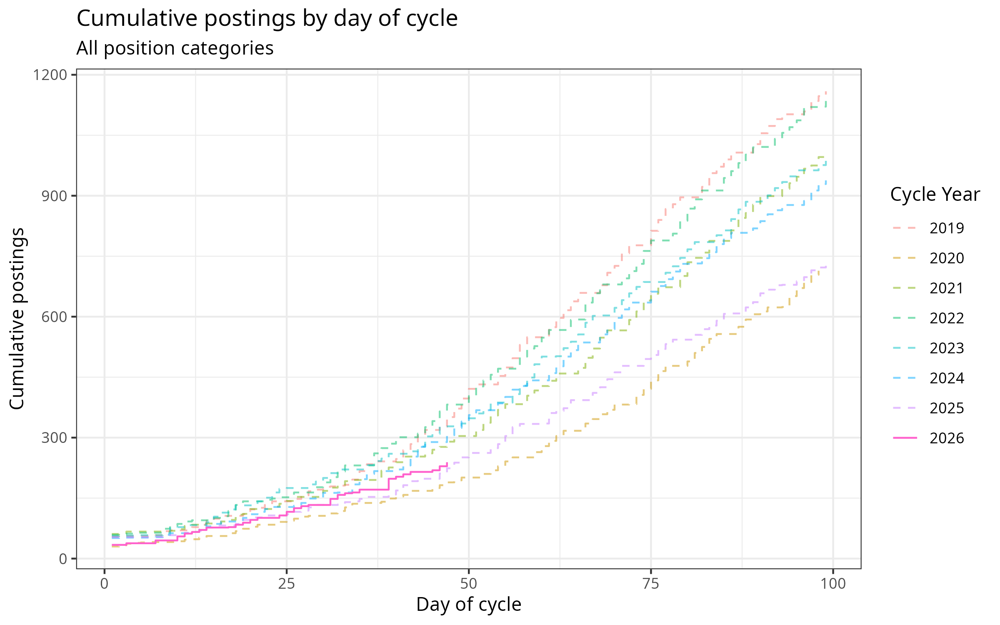

JOE Listings: Cumulative Postings by Day of Cycle
Data scraped from the AEA JOE listings page. Updated automatically.
View:
All listing types (aggregate)
US Academic, Tenure-track
US, Part-time/Adjunct
US, Visiting/Temporary
Intl, Tenure-track
Intl, Part-time/Adjunct
Intl, Visiting/Temporary
Full-time non-academic
Other non-academic

All job types (aggregate)